Classes | |
| class | BlockDevice |
| 块设备抽象基类 More... | |
| struct | Dentry |
| Dentry — 目录项缓存（路径名 ↔ Inode 的映射） More... | |
| struct | DirEntry |
| 目录项结构（用于 readdir） More... | |
| struct | File |
| File — 打开的文件实例（每次 open 产生一个） More... | |
| class | FileOps |
| File 操作接口 More... | |
| class | FileSystem |
| 文件系统类型基类 More... | |
| struct | Inode |
| Inode — 文件元数据（独立于路径名） More... | |
| class | InodeOps |
| Inode 操作接口 More... | |
| struct | MountPoint |
| 挂载点 More... | |
| class | MountTable |
| 挂载表管理器 More... | |
| struct | VfsState |
| VFS 全局状态结构体 More... | |
Enumerations | |
| enum class | FileType : uint8_t { kUnknown = 0 , kRegular = 1 , kDirectory = 2 , kCharDevice = 3 , kBlockDevice = 4 , kSymlink = 5 , kFifo = 6 } |
| 文件类型 More... | |
| enum class | OpenFlags : uint32_t { kOReadOnly = 0x0000 , kOWriteOnly = 0x0001 , kOReadWrite = 0x0002 , kOCreate = 0x0040 , kOTruncate = 0x0200 , kOAppend = 0x0400 , kODirectory = 0x010000 } |
| 文件打开标志（兼容 Linux O_* 定义） More... | |
| enum class | SeekWhence : int { kSet = 0 , kCur = 1 , kEnd = 2 } |
| 文件 seek 基准 More... | |
Functions | |
| auto | Close (File *file) -> Expected< void > |
| 关闭文件 | |
| auto | GetMountTable () -> MountTable & |
| 获取全局挂载表实例 | |
| auto | Init () -> Expected< void > |
| VFS 全局初始化 | |
| auto | Lookup (const char *path) -> Expected< Dentry * > |
| 路径解析，查找 dentry | |
| auto | Open (const char *path, OpenFlags flags) -> Expected< File * > |
| 打开文件 | |
| auto | Read (File *file, void *buf, size_t count) -> Expected< size_t > |
| 从文件读取数据 | |
| auto | Write (File *file, const void *buf, size_t count) -> Expected< size_t > |
| 向文件写入数据 | |
| auto | Seek (File *file, int64_t offset, SeekWhence whence) -> Expected< uint64_t > |
| 调整文件偏移量 | |
| auto | MkDir (const char *path) -> Expected< void > |
| 创建目录 | |
| auto | RmDir (const char *path) -> Expected< void > |
| 删除目录 | |
| auto | Unlink (const char *path) -> Expected< void > |
| 删除文件 | |
| auto | ReadDir (File *file, DirEntry *dirent, size_t count) -> Expected< size_t > |
| 读取目录内容 | |
| auto | GetRootDentry () -> Dentry * |
| 获取根目录 dentry | |
| constexpr auto | operator| (OpenFlags lhs, OpenFlags rhs) -> OpenFlags |
| 按位或 | |
| constexpr auto | operator& (OpenFlags lhs, OpenFlags rhs) -> OpenFlags |
| 按位与 | |
| constexpr auto | operator~ (OpenFlags flags) -> OpenFlags |
| 按位取反 | |
| constexpr auto | operator|= (OpenFlags &lhs, OpenFlags rhs) -> OpenFlags & |
| 按位或赋值 | |
| constexpr auto | operator&= (OpenFlags &lhs, OpenFlags rhs) -> OpenFlags & |
| 按位与赋值 | |
| constexpr auto | operator== (OpenFlags flags, uint32_t val) -> bool |
| 检查 OpenFlags 是否为零（无标志位设置） | |
| constexpr auto | operator!= (OpenFlags flags, uint32_t val) -> bool |
| 检查 OpenFlags 是否不为零 | |
| auto | GetVfsState () -> VfsState & |
| auto | SkipLeadingSlashes (const char *path) -> const char * |
| 跳过路径中的前导斜杠 | |
| auto | CopyPathComponent (const char *src, char *dst, size_t dst_size) -> size_t |
| 复制路径组件到缓冲区 | |
| auto | FindChild (Dentry *parent, const char *name) -> Dentry * |
| 在 dentry 的子节点中查找指定名称 | |
| auto | AddChild (Dentry *parent, Dentry *child) -> void |
| 添加子 dentry | |
| auto | RemoveChild (Dentry *parent, Dentry *child) -> void |
| 从父 dentry 中移除子 dentry | |
| auto | SetRootDentry (Dentry *dentry) -> void |
| auto | GetMountTableInternal () -> MountTable * |
Variables | |
| static constexpr size_t | kMaxPathLength = 4096 |
| VFS 路径最大长度限制 | |
Detailed Description
- Copyright
- Copyright The SimpleKernel Contributors
Enumeration Type Documentation
◆ FileType
|
strong |
文件类型
| Enumerator | |
|---|---|
| kUnknown | |
| kRegular | 普通文件 |
| kDirectory | 目录 |
| kCharDevice | 字符设备 |
| kBlockDevice | 块设备 |
| kSymlink | 符号链接 |
| kFifo | 命名管道 |
Definition at line 22 of file vfs_types.hpp.
◆ OpenFlags
|
strong |
文件打开标志（兼容 Linux O_* 定义）
| Enumerator | |
|---|---|
| kOReadOnly | |
| kOWriteOnly | |
| kOReadWrite | |
| kOCreate | |
| kOTruncate | |
| kOAppend | |
| kODirectory | 必须是目录 |
Definition at line 39 of file vfs_types.hpp.
◆ SeekWhence
|
strong |
文件 seek 基准
| Enumerator | |
|---|---|
| kSet | 从文件开头 |
| kCur | 从当前位置 |
| kEnd | 从文件末尾 |
Definition at line 94 of file vfs_types.hpp.
Function Documentation
◆ AddChild()
◆ Close()
关闭文件
- Parameters
-
file 文件对象
- Returns
- Expected<void> 成功或错误
- Precondition
- file != nullptr
- Note
- 会调用文件系统特定的 close 回调
- 关闭后 File 指针失效，不应再使用
Definition at line 15 of file close.cpp.

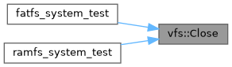
◆ CopyPathComponent()
| auto vfs::CopyPathComponent | ( | const char * | src, |
| char * | dst, | ||
| size_t | dst_size | ||
| ) | -> size_t |
复制路径组件到缓冲区
- Parameters
-
src 源路径（当前位置） dst 目标缓冲区 dst_size 缓冲区大小
- Returns
- 复制的长度
Definition at line 29 of file vfs.cpp.
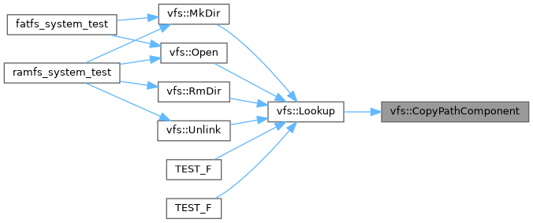
◆ FindChild()
在 dentry 的子节点中查找指定名称
Definition at line 38 of file vfs.cpp.
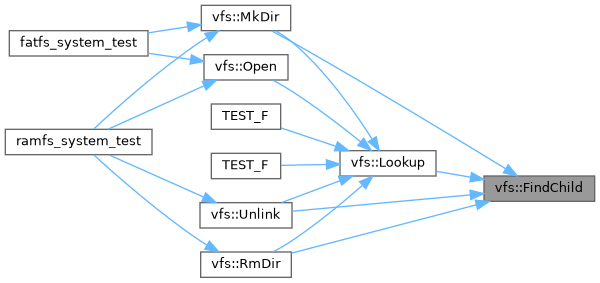
◆ GetMountTable()
| auto vfs::GetMountTable | ( | ) | -> MountTable& |
获取全局挂载表实例
- Returns
- MountTable& 挂载表引用
Definition at line 234 of file mount.cpp.
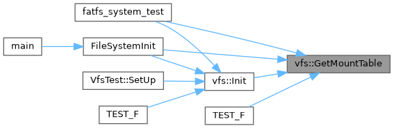
◆ GetMountTableInternal()
| auto vfs::GetMountTableInternal | ( | ) | -> MountTable* |
◆ GetRootDentry()
| auto vfs::GetRootDentry | ( | ) | -> Dentry* |
◆ GetVfsState()
| auto vfs::GetVfsState | ( | ) | -> VfsState & |
◆ Init()
| auto vfs::Init | ( | ) | -> Expected<void> |
VFS 全局初始化
- Returns
- Expected<void> 成功或错误
- Postcondition
- VFS 子系统已准备好接受挂载请求
- Note
- 线程安全：应在系统启动时单线程调用
- 幂等性：重复调用会返回成功（无操作）
Definition at line 80 of file vfs.cpp.
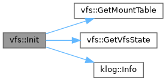
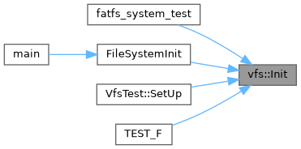
◆ Lookup()
路径解析，查找 dentry
- Parameters
-
path 绝对路径（以 / 开头）
- Returns
- Expected<Dentry*> 找到的 dentry 或错误
- Precondition
- path != nullptr && path[0] == '/'
- Note
- 线程安全：是，内部使用 MountTable 锁
- 会自动跨越挂载点解析路径
Definition at line 14 of file lookup.cpp.

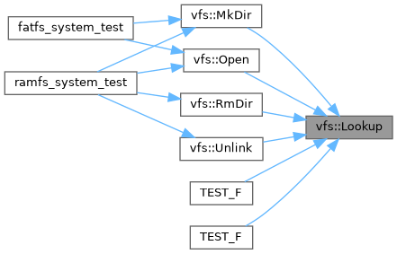
◆ MkDir()
| auto vfs::MkDir | ( | const char * | path | ) | -> Expected<void> |
创建目录
- Parameters
-
path 目录路径
- Returns
- Expected<void> 成功或错误
- Precondition
- path != nullptr
- Note
- 父目录必须存在
- 如果目录已存在会返回错误
Definition at line 14 of file mkdir.cpp.
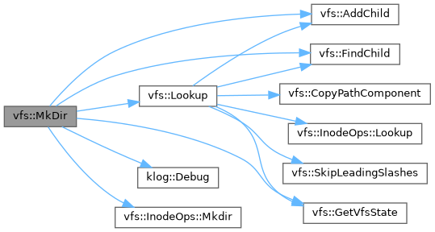
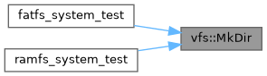
◆ Open()
打开文件
- Parameters
-
path 文件路径 flags 打开标志
- Returns
- Expected<File*> 文件对象或错误
- Precondition
- path != nullptr
- Postcondition
- 成功时返回有效的 File 对象
Definition at line 14 of file open.cpp.
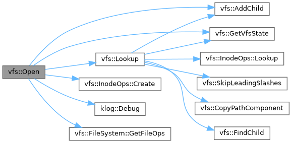
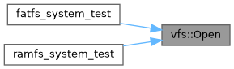
◆ operator!=()
|
inlineconstexpr |
检查 OpenFlags 是否不为零
Definition at line 88 of file vfs_types.hpp.
◆ operator&()
◆ operator&=()
◆ operator==()
|
inlineconstexpr |
检查 OpenFlags 是否为零（无标志位设置）
Definition at line 82 of file vfs_types.hpp.
◆ operator|()
◆ operator|=()
◆ operator~()
按位取反
Definition at line 65 of file vfs_types.hpp.
◆ Read()
从文件读取数据
- Parameters
-
file 文件对象 buf 输出缓冲区 count 最大读取字节数
- Returns
- Expected<size_t> 实际读取的字节数或错误
- Precondition
- file != nullptr && buf != nullptr
- Note
- 实际读取字节数可能小于 count（到达文件末尾）
- 会自动更新 file->offset
Definition at line 13 of file read.cpp.
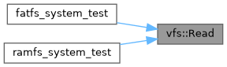
◆ ReadDir()
读取目录内容
- Parameters
-
file 目录文件对象 dirent 输出目录项数组 count 最多读取的条目数
- Returns
- Expected<size_t> 实际读取的条目数或错误
- Precondition
- file != nullptr && file->inode->type == FileType::kDirectory
- Note
- 会返回 . 和 .. 目录项
- 多次调用可遍历整个目录，自动维护偏移量
Definition at line 13 of file readdir.cpp.

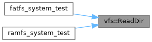
◆ RemoveChild()
从父 dentry 中移除子 dentry
Definition at line 63 of file vfs.cpp.
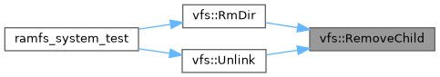
◆ RmDir()
| auto vfs::RmDir | ( | const char * | path | ) | -> Expected<void> |
删除目录
- Parameters
-
path 目录路径
- Returns
- Expected<void> 成功或错误
- Precondition
- path != nullptr
- Note
- 目录必须为空（不含子项）
- 不能删除挂载点
Definition at line 15 of file rmdir.cpp.
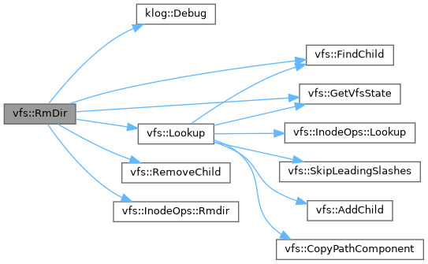
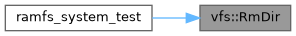
◆ Seek()
| auto vfs::Seek | ( | File * | file, |
| int64_t | offset, | ||
| SeekWhence | whence | ||
| ) | -> Expected<uint64_t> |
调整文件偏移量
- Parameters
-
file 文件对象 offset 偏移量 whence 基准位置
- Returns
- Expected<uint64_t> 新的偏移量或错误
- Precondition
- file != nullptr
- Note
- 如果 whence 为 kEnd 且 offset 为正，可能超过文件末尾
- 返回的偏移量是绝对位置（从文件开头计算）
Definition at line 13 of file seek.cpp.

◆ SetRootDentry()
| auto vfs::SetRootDentry | ( | Dentry * | dentry | ) | -> void |
◆ SkipLeadingSlashes()
| auto vfs::SkipLeadingSlashes | ( | const char * | path | ) | -> const char * |
◆ Unlink()
| auto vfs::Unlink | ( | const char * | path | ) | -> Expected<void> |
删除文件
- Parameters
-
path 文件路径
- Returns
- Expected<void> 成功或错误
- Precondition
- path != nullptr
- Note
- 不能删除目录（使用 RmDir）
- 如果多个硬链接，只会减少链接计数
Definition at line 15 of file unlink.cpp.
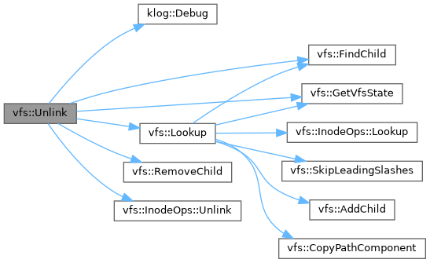
◆ Write()
向文件写入数据
- Parameters
-
file 文件对象 buf 输入缓冲区 count 要写入的字节数
- Returns
- Expected<size_t> 实际写入的字节数或错误
- Precondition
- file != nullptr && buf != nullptr
- Note
- 文件系统可能需要在写入前扩展文件大小
- 会自动更新 file->offset 和 file->inode->size
Definition at line 13 of file write.cpp.
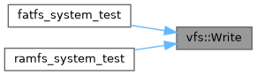
Variable Documentation
◆ kMaxPathLength
|
staticconstexpr |
VFS 路径最大长度限制
Definition at line 14 of file vfs_internal.hpp.